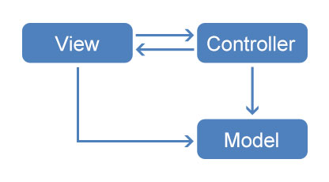
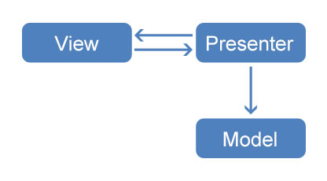
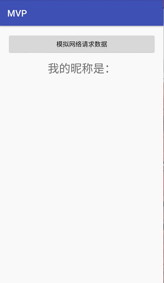
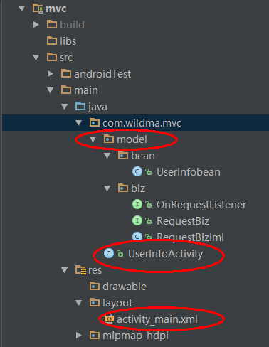
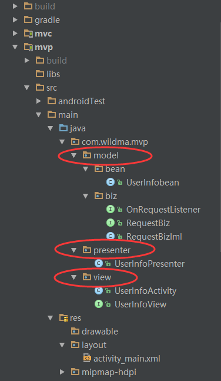

前言
首先介绍一下所谓的MVP，美国职业篮球联赛最有价值球员奖（National Basketball Association Most Valuable Player Award ，简称MVP）是一个自1955-1956赛季以来每年对美国职业篮球联赛（NBA）常规赛中全场表现最佳的球员所颁发的一个奖项。
哎呀！不好意思，讲错了！
言归正传，作为一个Android攻城狮（虽然也是一位篮球爱好者），这里要介绍的MVP当然是一种软件设计模式啦！下面进入正题！
一、MVC
概念：MVC全称为Model-View-Controller，也就是 模型-视图-控制器。是最常见的一种软件设计模式。
Model：对应Android中的数据实体模型、数据访问接口、数据库操作等，用于存取数据和处理业务逻辑。
View：对应Android中的布局文件，用来展示UI。
Controller：对应Android中的Activity、Fragment等，用于更新UI界面与数据。它们之间的关系图如下：

MVC的工作原理是用户在View层触发事件，Controller层接收到View层的事件后就会更新Model层数据，Model层数据改变后就通知Controller层更新UI。（View层也可以直接更新Model层的数据）
从MVC的关系图与工作原理可知，View层一般只能显示静态的布局，例如想动态的去隐藏或者显示某个UI都要Activity去操作，而Activity是属于Controller层的，这样就造成了Activity既像View又像Controller，而且View层和Model层是相互耦合的。所以我们在使用MVC写比较复杂的界面的时候，Activity中上千行代码是常有的事。随之带来的就是测试与维护的困难。当你入职新公司接手一个这样的MVC项目就能体会到这种痛苦了。所以也就有了之后的MVP、MVVM。
二、MVP
概念：MVP全称为Model-View-Presenter，也就是 模型-视图-表示器。是MVC模式的演化版。
Model：与MVC一样，对应Android中的数据实体模型、数据访问接口、数据库操作等，用于存取数据和处理业务逻辑。
View：对应Android中的Activity、Fragment等，用来展示UI、与用户进行交互。
Presenter：充当Model和View之间的桥梁，负责它们之间的交互。它们之间的关系图如下：

由上图可以明显的看到Model与View之间的交互由Presenter完成，即View与Model是完全解耦的。而View与Presenter的交互也不是直接交互的，而是通过接口来完成。随之带来的好处：
- 解耦了Model与View，简化了Activity中的代码，方便维护。
- 将复杂的逻辑代码提取到了Presenter中，方便单元测试。
三、实践出真理
好了，说了这么多，相信大部分人还是一脸懵逼！那就让我来举个例子吧！保证能让你通俗易懂的理解MVC与MVP。
举得例子非常简单，主要为了让大家更容易理解。
点击按钮，发起网络请求获取用户信息，然后直接显示在界面。效果图如下：

3.1 MVC 代码实现
工程结构图如下：

3.1.1 Model层
UserInfobean： 数据实体模型，也就是网络请求回来的数据存储到这里。
public class UserInfobean { private String name;//用户昵称 public String getName() { return name; } public void setName(String name) { this.name = name; } }RequestBiz： 请求业务接口，里面只有一个请求数据的方法。
public interface RequestBiz { /** * 请求数据 * * @param listener 成功或失败的回调接口 */ void requestData(OnRequestListener listener); }RequestBizIml： 请求业务接口的实现类，里面业务主要是开启子线程休眠2秒来模拟网络请求，请求成功后填充数据到UserInfobean，并通过接口将成功或失败回调出去。
public class RequestBizIml implements RequestBiz { @Override public void requestData(final OnRequestListener listener) { /** * 开启子线程休眠2秒来模拟网络请求，请求成功后填充数据到UserInfobean，并通过接口将成功或失败回调出去 */ new Thread(new Runnable() { @Override public void run() { try { Thread.sleep(2000); UserInfobean userInfobean = new UserInfobean(); userInfobean.setName("wildma"); boolean isRequestSuccess = true;//模拟请求是否成功 if (null != listener) { if (isRequestSuccess) { listener.onSuccess(userInfobean); } else { listener.onFailed("服务器繁忙，请稍后再试！"); } } } catch (Exception e) { e.printStackTrace(); } } }).start(); } }OnRequestListener： 请求成功或失败的回调接口。
public interface OnRequestListener { /** * 请求成功回调 * * @param data 服务器返回的数据 */ void onSuccess(Object data); /** * 请求失败回调 * * @param failReason 失败原因 */ void onFailed(String failReason); }
3.1.2 View层
就是布局文件activity_main，很简单，一个Button用来获取网络数据，一个TextView用来显示数据，一个ProgressBar是加载等待圈。
<?xml version="1.0" encoding="utf-8"?>
<RelativeLayout
android:id="@+id/activity_main"
xmlns:android="http://schemas.android.com/apk/res/android"
xmlns:tools="http://schemas.android.com/tools"
android:layout_width="match_parent"
android:layout_height="match_parent"
android:paddingBottom="@dimen/activity_vertical_margin"
android:paddingLeft="@dimen/activity_horizontal_margin"
android:paddingRight="@dimen/activity_horizontal_margin"
android:paddingTop="@dimen/activity_vertical_margin"
tools:context="com.wildma.mvc.UserInfoActivity">
<Button
android:id="@+id/btn_get_data"
android:layout_width="match_parent"
android:layout_height="wrap_content"
android:layout_centerHorizontal="true"
android:onClick="getData"
android:text="模拟网络请求数据"/>
<TextView
android:id="@+id/tv_name"
android:layout_width="wrap_content"
android:layout_height="wrap_content"
android:layout_below="@id/btn_get_data"
android:layout_centerHorizontal="true"
android:layout_marginTop="12dp"
android:text="我的昵称是："
android:textSize="25sp"/>
<ProgressBar
android:id="@+id/pb_loading"
android:layout_width="60dp"
android:layout_height="60dp"
android:layout_centerInParent="true"
android:visibility="gone"/>
</RelativeLayout>3.1.3 Controller层
Controller层对应UserInfoActivity，也是非常简单，主要是界面的初始化，点击按钮请求数据，请求到数据后更新界面。
public class UserInfoActivity extends AppCompatActivity {
private TextView mTvName;
private RequestBizIml mRequestBizIml;
private ProgressBar mPbLoading;
private Handler mHandler;
@Override
protected void onCreate(Bundle savedInstanceState) {
super.onCreate(savedInstanceState);
setContentView(R.layout.activity_main);
//find view
mTvName = (TextView) findViewById(R.id.tv_name);
mPbLoading = (ProgressBar) findViewById(R.id.pb_loading);
//init
mHandler = new Handler();
mRequestBizIml = new RequestBizIml();
}
/**
* 获取数据按钮点击事件
*
* @param view
*/
public void getData(View view) {
requestData();
}
/**
* 请求数据
*/
private void requestData() {
mPbLoading.setVisibility(View.VISIBLE);
mRequestBizIml.requestData(new OnRequestListener() {
@Override
public void onSuccess(final Object data) {
//因为请求开启了子线程，所以这里需要用UI线程去更新界面
mHandler.post(new Runnable() {
@Override
public void run() {
mPbLoading.setVisibility(View.GONE);
UserInfobean userInfobean = (UserInfobean) data;
mTvName.setText("我的昵称是：" + userInfobean.getName());
}
});
}
@Override
public void onFailed(final String failReason) {
//因为请求开启了子线程，所以这里需要用UI线程去更新界面
mHandler.post(new Runnable() {
@Override
public void run() {
mPbLoading.setVisibility(View.GONE);
Toast.makeText(getApplicationContext(), failReason, Toast.LENGTH_SHORT).show();
}
});
}
});
}
}看完MVC的代码，相信你也发现了，ProgressBar的隐藏与显示，TextView显示用户的昵称这些逻辑其实都是属于View层的，但是都写在了Activity里面了，这就像我在前面说的Activity既像View又像Controller。复杂点的界面就造成Activity过于臃肿。
3.2 MVP 代码实现
工程结构图如下：

由结构图可知MVP就比MVC多了UserInfoPresenter与UserInfoView。
3.2.1 Model层
前面说了，MVP中的Model层与MVC是一样的。所以代码也是一样的。这里就不列出来了，可以看上面的。
3.2.2 View层
MVP中的VIew层对应UserInfoActivity，但它不是直接与Presenter交互的，他们之间的交互是通过接口来实现的。所以这里需要先写一个接口，然后再让UserInfoActivity实现该接口。
UserInfoView： UserInfoActivity需要实现的接口，在这个接口我们就要定义UserInfoActivity需要实现的方法，分析UI图可知，我们这里需要如下几个方法：
showLoading：显示加载圈
hideLoading：隐藏加载圈
showName：显示昵称
showFailReason：显示失败原因
完整代码如下：public interface UserInfoView { /** * 显示加载圈 */ void showLoading(); /** * 隐藏加载圈 */ void hideLoading(); /** * 显示昵称 * * @param name 昵称 */ void showName(String name); /** * 显示失败原因 * * @param failReason 失败原因 */ void showFailReason(String failReason); }UserInfoActivity： UserInfoView的实现类，主要就是实现UserInfoView的方法做出相应的UI变化。
public class UserInfoActivity extends AppCompatActivity implements UserInfoView { private TextView mTvName; private ProgressBar mPbLoading; private UserInfoPresenter mUserInfoPresenter; @Override protected void onCreate(Bundle savedInstanceState) { super.onCreate(savedInstanceState); setContentView(R.layout.activity_main); //find view mTvName = (TextView) findViewById(R.id.tv_name); mPbLoading = (ProgressBar) findViewById(R.id.pb_loading); //init mUserInfoPresenter = new UserInfoPresenter(this); } /** * 获取数据按钮点击事件 * * @param view */ public void getData(View view) { mUserInfoPresenter.requestData(); } @Override public void showLoading() { mPbLoading.setVisibility(View.VISIBLE); } @Override public void hideLoading() { mPbLoading.setVisibility(View.GONE); } @Override public void showName(String name) { mTvName.setText(name); } @Override public void showFailReason(String failReason) { Toast.makeText(getApplicationContext(), failReason, Toast.LENGTH_SHORT).show(); } }可以看到，整个UserInfoActivity都没有涉及到Model层，而是通过UserInfoPresenter来间接交互。
3.2.3 Presenter层
UserInfoPresenter： UserInfoPresenter里的代码也就是MVC中Activity涉及到Model层相关的逻辑代码。因为Presenter充当Model和View之间的桥梁，所以需要在合适的时机调用UserInfoView接口对应的方法。又由于我们的Activity实现了这个接口，所以在UserInfoPresenter中调用UserInfoView中方法的同时，Activity中对应的方法也会执行。
public class UserInfoPresenter { private UserInfoView mUserInfoView; private RequestBiz requestBiz; private Handler mHandler; public UserInfoPresenter(UserInfoView userInfoView) { this.mUserInfoView = userInfoView; requestBiz = new RequestBizIml(); mHandler = new Handler(Looper.getMainLooper()); } /** * 请求数据 */ public void requestData() { mUserInfoView.showLoading(); requestBiz.requestData(new OnRequestListener() { @Override public void onSuccess(final Object data) { //因为请求开启了子线程，所以这里需要用UI线程去更新界面 mHandler.post(new Runnable() { @Override public void run() { mUserInfoView.hideLoading(); UserInfobean userInfobean = (UserInfobean) data; mUserInfoView.showName("我的昵称是：" + userInfobean.getName()); } }); } @Override public void onFailed(final String failReason) { //因为请求开启了子线程，所以这里需要用UI线程去更新界面 mHandler.post(new Runnable() { @Override public void run() { mUserInfoView.hideLoading(); mUserInfoView.showFailReason(failReason); } }); } }); } }
看了MVP的代码，是不是觉得Activity特别简洁明了！整个Activity没有任何地方涉及到Model层相关的代码，这样就达到了Model与View层解耦的目的。而且将复杂的逻辑代码提取到了Presenter中，方便进行单元测试。
结语
OK，MVC与MVP的讲解就到这里，看完上面的讲解能让你恍然大悟的请在文章下面点个赞，还是一脸懵逼的。。。不要来打我！再看多一遍呗~
Demo地址：MVP-Pattern
参考资料：
http://konmik.com/post/introduction_to_model_view_presenter_on_android/
http://blog.csdn.net/lmj623565791/article/details/46596109
http://www.jianshu.com/p/9a6845b26856